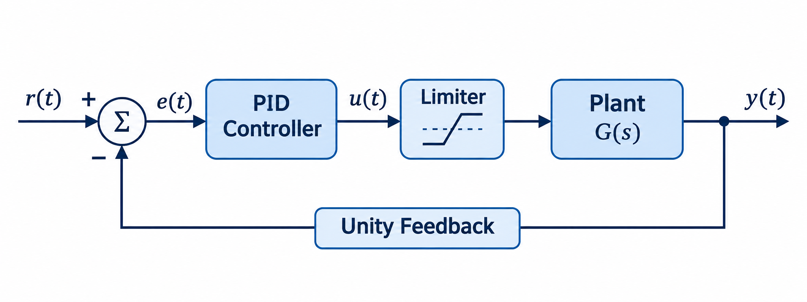

Explore the effects of PID controllers on first-order and second-order systems.
The setpoint represents the desired system output.

Select your predictions, change the controller gains, then check your answers.
Note: The control signal is limited to −10 and +10 to represent actuator saturation.
Rise time: 10% to 90% of the steady-state output. Settling time: within ±2% of the steady-state output. Overshoot and SSE are relative to the setpoint. N/A indicates an unsettled or undefined response.
First-order plant: K = 1, τ = 1 s.